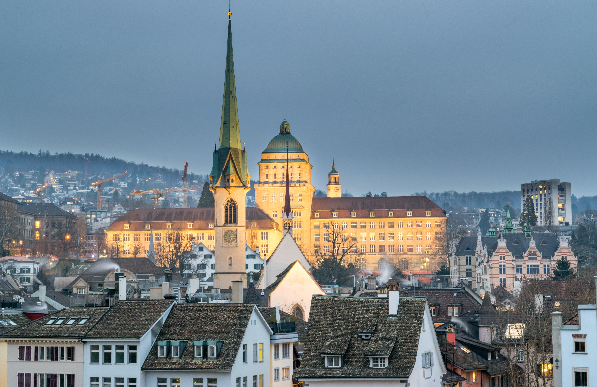
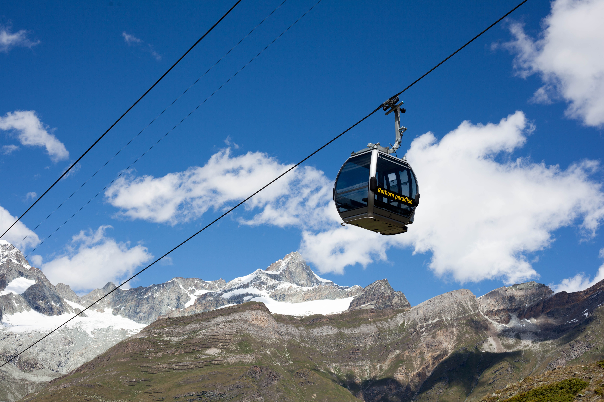

Recommended Places to visit in Pakistan
Zurich
Switzerland's largest city, known for its vibrant arts scene, shopping, and historic Old Town.
Lucerne

Nestled by a picturesque lake and surrounded by mountains, Lucerne is known for its preserved medieval architecture.
Interlaken

A paradise for outdoor enthusiasts, offering activities like hiking, skiing, and paragliding amidst stunning Alpine scenery.
Jungfraujoch

Often called the "Top of Europe", it's a high-altitude mountain pass with breathtaking views of the Aletsch Glacier.
Zermat
A car-free village at the base of the iconic Matterhorn mountain, known for its excellent skiing and mountaineering.